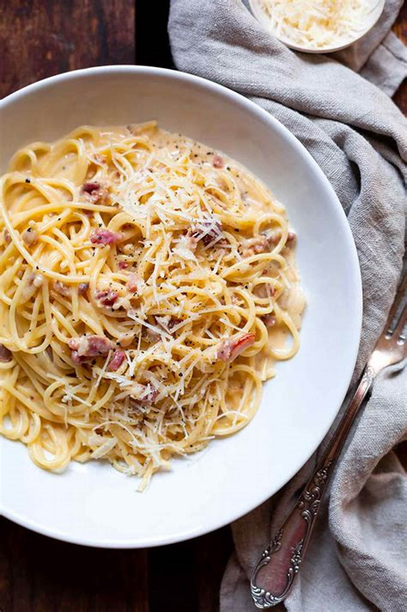

Delicious Recipes
Welcome to our food blog where we share mouth-watering recipes and cooking tips
Classic Spaghetti Carbonara
Posted o july 23, 2024 by Chef Mario

Spaghetti carbonara
Today, we are making a classic Italian dish- Spaghetti carbonara. This is a simple yet delicious recipe that will impress your family and friends. Let's dive in!
Ingredients
200g Spaghetti
100g Pancetta
2 Large eggs
50g pecorino cheese
50g parmesan
2 cloves of garlic
Freshly ground black pepper
salt
Instuctions
- Put a large pot of salted water on to boil
- Beat the eggs in a medium bowl, season with a little freshly grated black pepper, and set aside.
- Finely chop the 100g pancetta, having first removed any rind. Finely grate both cheeses and mix them together.
- Add the pasta to the water and cook according to the package instruction
- Squash 2 peeled plump garlic cloves with the blade of a knife, just to bruise it.
- While the spaghetti is cooking, fry the pancetta with the garlic. Drop the garlic into the pan with the pancentta and leave to cook on a medium heat until the pancetta is golden and golden and crips
- Remove the garlic from the pan and discard it.
- Keep the heat under the pancetta on low. when the pasta is ready, lift it from the water with a pasta fork or a tongs and put it in the the frying pan with pancetta. Do not throw away the pasta water.
- Mix most of the cheese in with the eggs, keeping a small handful back for sprinkling over later.
- Take the pan of spaghetti and pancentta of the heat. Quickly pour in the in the eggs and cheese. Using the tong or a long fork, lift up the spaghetti so it mixs easily with the egg mixture, which thickens but doesn't scramble, and everything is coated
- Add extra pasta cooking water to keep it saucy. Season with a little salt, if needed.
- Use a long-pronged fork to twist the pasta onto the serving plate or bowl. Serve immediately with a little sprinking of the remaining cheese and grating of black pepper. If the dish does get a little dry before serving, splash in some more hot pasta water and the glossy sauciness will be revivied
Cooking Tips
Here are some tips to make your Carbonara perfect:
Make sure to use fresh ingrdients for the best taste
Do not overcook the pasta; it should be al dente
Mix the egg and cheese mixture off the heat to avoid scrambling the eggs
For more delicious recipes, check out our Website!
2024 Delicious Recipes. All Right Reserved